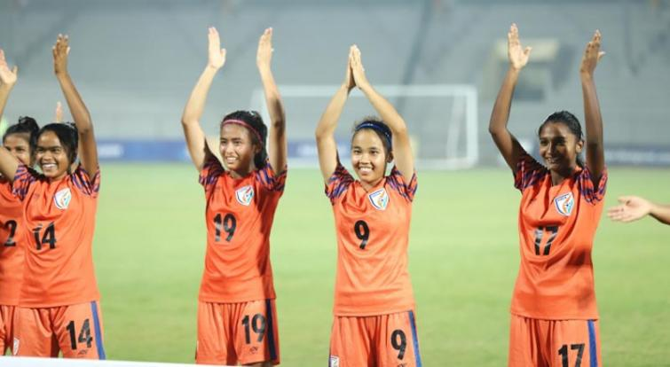
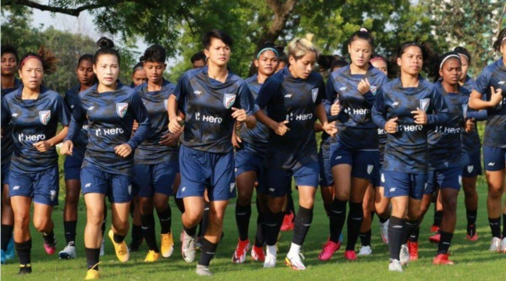

| Football (soccer) is one of the most popular sports in India. The game is played extensively in the country, with the maximum fan following in Goa, Kerala, West Bengal, Mizoram, Manipur and Sikkim. In the rest of the states, it is next to cricket in terms of popularity. All the international league matches and the soccer World Cup are keenly watched by the sports enthusiasts in the sub continent. The game holds a rich tradition in India, its history being something that deserves special mention. Go through the following lines to get information on the history of football in India. | Women's football in India was administered by the Women's Football Federation of India (WFFI) until early 1990s, when the AIFF took over the administration of women's soccer in the country. Just like the men's game, the women's game had its early pioneers from the state of West Bengal. The women's clubs were started by East Bengal and Mohun Bagan clubs in 2000-01 season. National championships for both senior and junior girls are also held. The majority of players in the Indian women's national football team are from Manipur and West Bengal. However, women's football in India has not gained as much popularity as the men's teams have. |
|  |  |
|
| There are numerous challenges on the path to engaging women and girls in Football. One of the biggest setbacks faced in South Asian countries like India, especially in the more rural areas where football is very popular, is that women and girls are viewed as ‘homemakers’ and this role is thrust upon them as being their obligation, not a choice. This has led these women and girls themselves having reservations with regard to failing society and their own families by not doing their duty and daring to step outside of their clearly defined ‘role’. | Sexual harassment and lack of safe spaces is yet another problem faced by girls and women playing football. For instance “girls playing football in the Mathare Youth Sports Association (MYSA) programme in Kenya spoke of the taunts and jeers of the boys who teased them as they walked in the community and of the risk of being harassed by street boys who were present near the playing field.” Some of these girls and women are subjected to domestic violence due to daring to step out of their stereotypical roles of ‘mother’ or ‘daughter’ or both. “...one of the girls in the MYSA programme noted, “When I started playing for MYSA my father would say that there is no football for girls, and he would beat me up. |